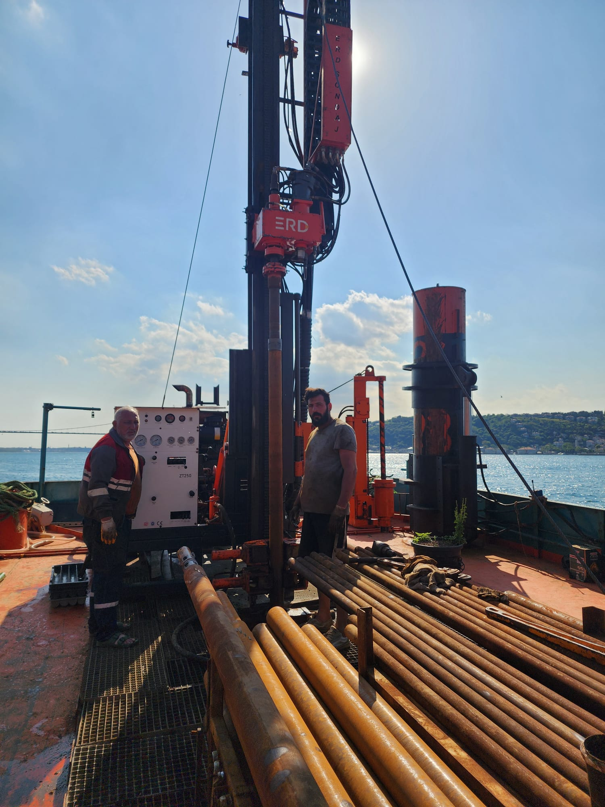
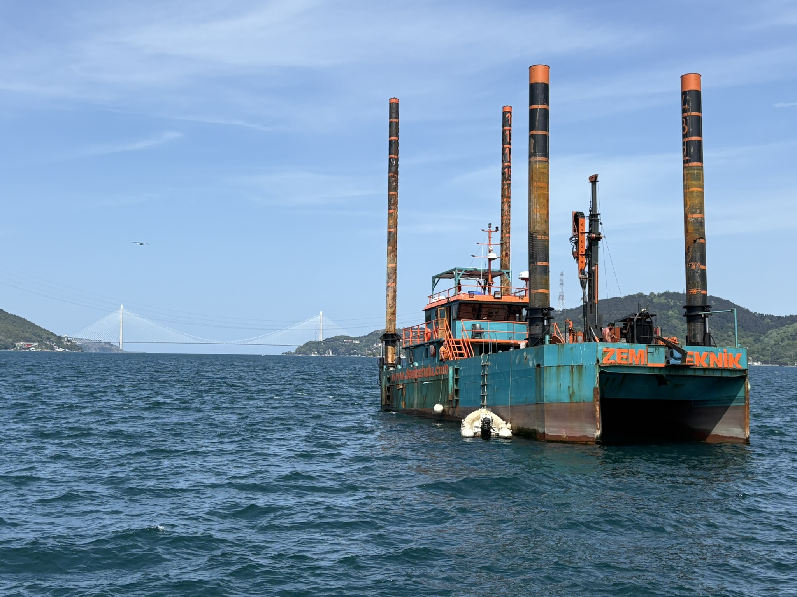
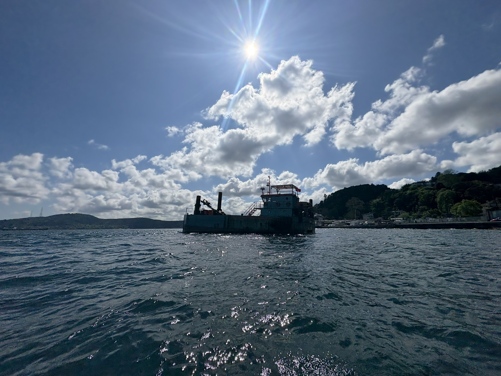

İstanbul Boğazı'nın kalbinde 403 metrelik sondaj başarısı: akıntıya karşı direnç, bilime katkı.
İstanbul Boğazı’nın Kalbinde 403 Metrelik Sondaj Başarısı: Akıntıya Karşı Direnç, Bilime Katkı İstanbul Boğazı’nın derinliklerinde, beş farklı noktada—Kuleli, Aşiyan Mezarlığı Önü, Anadolu Kavağı İskelesi Önü ve Sarıyer’de 2 farklı bölgede—yürüttüğümüz deniz sondajları, yalnızca metrajla ölçülebilecek bir iş olmaktan çok daha fazlasıydı. Bu çalışma, sahadaki bilgi birikimimizin, planlama disiplinimizin ve teknik kapasitemizin eşsiz bir yansıması oldu. Toplamda 403 metre sondaj, 12 gün gibi kısa bir sürede başarıyla tamamlandı. İstanbul Boğazı, sadece coğrafi güzelliğiyle değil, mühendislik açısından taşıdığı riskler ve dinamik koşullarıyla da zorlukları içinde barındırıyor. Yoğun deniz trafiği, karmaşık akıntı sistemleri, ani hava değişimleri ve zemin belirsizlikleri gibi faktörler, bu projeyi standart bir saha çalışmasının çok ötesine taşıdı. Ancak biz, sahadaki her anı stratejik bir sürece dönüştürerek, her zorluğu kontrollü bir başarıya çevirmeyi başardık. Her biri kendine özgü karakteristik zemin yapısına sahip bu dört bölgede, sondajlarımızı hem çevresel duyarlılık ilkelerinden ödün vermeden hem de uluslararası kalite standartlarına sadık kalarak yürüttük. Derinliği ortalama 30.00 metreyi bulan kuyularda, su seviyesi ölçümlerinden zemin sınıflamalarına kadar tüm veriler özenle toplandı. Sahada uygulanan tüm deneyler titizlikle tamamlandı; hiçbir aşama rastlantıya bırakılmadı. Bu çalışmanın en kıymetli yanı, teknik bir başarıdan fazlasını ifade ediyor oluşu. İstanbul’un jeolojik belleğine veri eklemek, sadece bugünün değil, geleceğin yapılaşmasına ve güvenli şehir planlamasına katkı sunmak demek. Bu bakış açısıyla, her metreyi sadece kazmadık; aynı zamanda okuduk, analiz ettik, belgeledik ve anlamlandırdık. Biliyoruz ki, güçlü yapılar yalnızca mühendislik değil; sabır, öngörü ve bilimsel yaklaşımla inşa edilir. Bu projeyle, İstanbul Boğazı gibi dinamik bir bölgede, çok yönlü bir başarıya imza atmış olmanın gururunu taşıyoruz. Denizin akıntısına karşı değil, onunla birlikte çalışarak… Bilimin gücünü sahaya taşıyarak… İstanbul’un derinliklerine iz bıraktık.



Sahanızı ve hedeflerinizi anlatın; uzman ekibimiz ekipman, süre ve maliyet içeren net bir teklif hazırlasın.